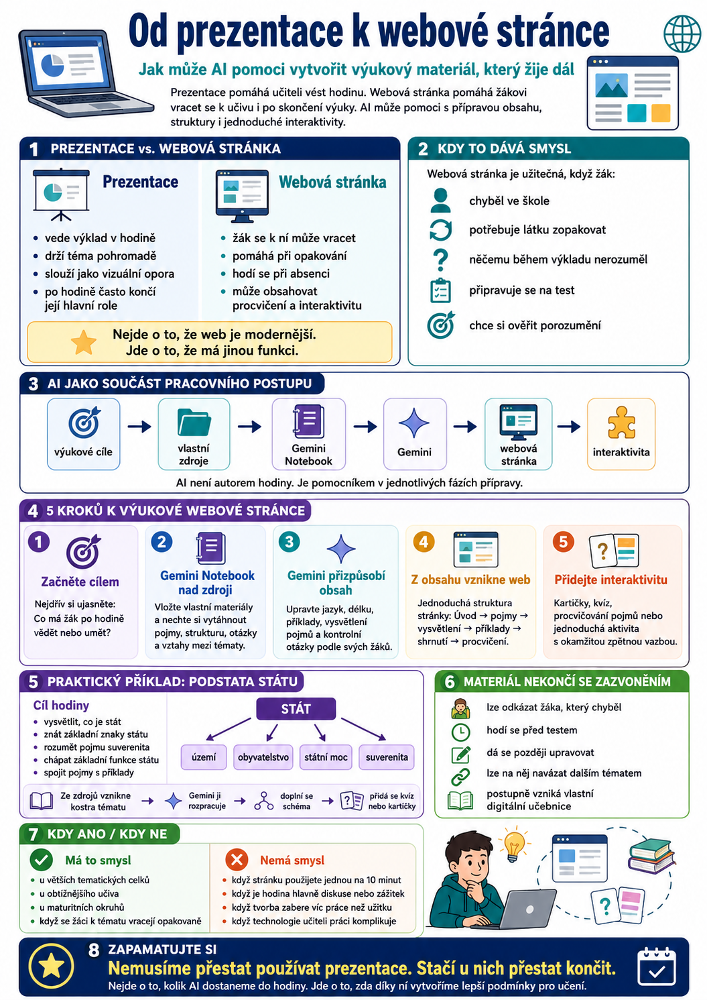

Prezentace patří k běžné výbavě učitele. Pomáhá vést hodinu, držet výklad pohromadě a nabídnout žákům základní vizuální oporu. Jenže ne každá výuková látka musí skončit jako další PowerPoint.
Pomocí dnešních AI nástrojů můžeme poměrně snadno vytvořit také jednoduchou výukovou webovou stránku – materiál, ke kterému se žáci mohou vracet i po skončení hodiny.

Musí být výsledkem vždycky prezentace?
Když připravuji novou hodinu, velmi snadno sklouznu k tradičnímu postupu:
Na prezentacích není nic špatného. Sama je používám a používat budu. Problém nastává spíš ve chvíli, kdy se prezentace stane automatickou odpovědí na každou výukovou situaci.
Po skončení hodiny totiž často skončí i její hlavní úloha.
U některých témat by přitom dávalo větší smysl vytvořit materiál, ke kterému se žák může později vrátit. Například když:
- chyběl ve škole,
- potřebuje látku zopakovat,
- něčemu během výkladu nerozuměl,
- připravuje se na test,
- chce si ověřit, zda učivu skutečně rozumí.
A právě tady může být zajímavou alternativou jednoduchá výuková webová stránka.
Ne proto, že je web modernější než PowerPoint. Ale proto, že může mít jinou funkci.
Prezentace pomáhá učiteli vést hodinu. Webová stránka pomáhá žákovi se k učivu vracet. Interaktivní prvek mu navíc může umožnit si učivo vyzkoušet.
AI jako součást pracovního postupu
Dnes už učitel nemusí webovou stránku programovat ručně ani se kvůli ní učit HTML, CSS a JavaScript.
Zároveň bych ale nedoporučovala otevřít AI a jednoduše napsat:
„Vytvoř mi webovou stránku na téma podstata státu.“
Něco pravděpodobně vznikne. Otázkou je, jestli to bude odpovídat tomu, co skutečně potřebuji ve své hodině.
Mnohem zajímavější je rozdělit práci mezi několik nástrojů a každému svěřit to, v čem mi může pomoci.
Jednoduchý workflow může vypadat například takto:
AI potom není autorem mé hodiny. Je pomocníkem v jednotlivých fázích její přípravy.
1. Nezačínám AI, ale výukovým cílem
Nejdříve si položím obyčejnou učitelskou otázku:
Co má žák po této hodině vědět nebo umět?
Nemusím psát složitý pedagogický dokument. Stačí několik konkrétních bodů.
Teprve potom má smysl otevírat AI.
Tohle pořadí je podle mě důležité. Pokud totiž sama nevím, kam má hodina směřovat, AI to za mě spolehlivě nerozhodne.
2. Gemini Notebook jako pracovní prostor nad zdroji
Do Gemini Notebooku mohu vložit materiály, ze kterých při přípravě skutečně vycházím – vlastní poznámky, studijní texty, dokumenty nebo další vhodné zdroje.
Místo požadavku na hotovou stránku si z nich můžu nechat například:
- vytáhnout nejdůležitější pojmy,
- vytvořit přehled tématu,
- navrhnout strukturu výkladu,
- připravit otázky,
- vytvořit kartičky,
- najít vztahy mezi jednotlivými částmi učiva.
Gemini Notebook tak používám především jako pracovní prostor nad vlastními zdroji, nikoliv jako automatického autora hotové hodiny.
3. Gemini pomůže obsah přizpůsobit žákům
Připravenou strukturu můžu dále rozpracovat v Gemini.
Tady už mohu řešit například:
- délku jednotlivých částí,
- jazyk odpovídající věku žáků,
- vysvětlení obtížných pojmů,
- příklady z běžného života,
- kontrolní otázky,
- krátká shrnutí,
- různé varianty vysvětlení.
A právě zde zůstává důležitá role učitele.
AI nezná moji třídu tak jako já. Neví automaticky, co už jsme probírali, na čem se žáci minule zasekli nebo který příklad u nich bude fungovat.
Výsledek proto kontroluji a upravuji.
4. Z obsahu vznikne webová stránka
Teprve když mám vyřešený obsah, začínám přemýšlet o podobě stránky.
Může být velmi jednoduchá.
Například:
Nemusí připomínat profesionální vzdělávací portál. Jejím úkolem není vyhrát soutěž v grafickém designu.
Má především pomoci žákovi pochopit učivo a později se k němu vrátit.
Pro vizuální zpracování lze využít například Canvu a další nástroje. Kdo chce jít dál, může začít experimentovat také s vibe codingem a Google AI Studiem.
5. Stránka nemusí být pouze na čtení
Tady začíná být celý postup ještě zajímavější.
Výstupy vytvořené při práci s Gemini Notebookem nemusí zůstat pouze uvnitř notebooku.
Například obsah kartiček lze dále zpracovat jako strukturovaná data a použít jej při tvorbě vlastního interaktivního prvku. Podobně lze pracovat s otázkami nebo dalšími připravenými výstupy.
Pomocí Google AI Studia a vibe codingu pak můžeme vytvořit například:
- otočné kartičky,
- krátký kvíz,
- procvičování pojmů,
- přiřazování správných odpovědí,
- jednoduchou aktivitu s okamžitou zpětnou vazbou.
Důležité je jedno: nejde o kouzelný export hotového modulu jedním tlačítkem.
Jde spíš o chytrou recyklaci již vytvořeného obsahu.
Jednou připravené otázky nemusím znovu opisovat do dalšího nástroje. Mohou se stát podkladem pro nový interaktivní prvek.
A právě tady začíná být vibe coding pro učitele zajímavý.
Nemusím se stát programátorem. Potřebuji především vědět, co má daná aktivita dělat a proč ji chci ve výuce použít.
Jak by to mohlo vypadat v praxi: Podstata státu
Vezměme si konkrétní téma z občanské nauky – Podstata státu.
Místo toho, abych začala příkazem:
„Vytvoř mi stránku o státu,“
začnu výukovým cílem.
Po skončení hodiny by například žák měl:
- vysvětlit vlastními slovy, co je stát,
- znát základní znaky státu,
- rozumět pojmu suverenita,
- chápat základní funkce státu,
- dokázat pojmy spojit s konkrétními příklady.
1. Připravím zdroje
Do Gemini Notebooku vložím materiály, ze kterých při výuce vycházím.
Nechám si z nich vytvořit například návrh struktury:
Tím získám kostru.
2. Přizpůsobím obsah svým žákům
V Gemini potom jednotlivé části rozpracuji.
Mohu například požadovat krátké vysvětlení pojmu suverenita pro středoškoláka nebo příklad, na kterém bude dobře vidět rozdíl mezi územím, obyvatelstvem a státní mocí.
Výsledek následně upravím podle své třídy.
3. Doplním vizuální oporu
Nemusím vytvářet dvacet obrázků.
Pro toto téma může úplně stačit jednoduché schéma:
↓
území · obyvatelstvo · státní moc · suverenita
K tomu lze přidat několik konkrétních příkladů.
4. Přidám procvičování
Z připravených pojmů mohou vzniknout kartičky.
Z kontrolních otázek krátký kvíz.
A pokud chci experimentovat s vibe codingem, můžu si v Google AI Studiu nechat pomoci s vytvořením jednoduché interaktivní aktivity.
Žák tak stránku nejen přečte, ale může si na jejím konci také ověřit:
Rozumím tomu skutečně?
5. Materiál nekončí se zazvoněním
A v tom vidím největší rozdíl oproti klasické prezentaci.
Po skončení hodiny stránka nezmizí.
Mohu na ni odkázat žáka, který chyběl. Mohu ji použít před testem. Později na ni můžu navázat dalším tématem. A pokud zjistím, že některé vysvětlení nefunguje, jednoduše ho upravím.
Postupně tak nemusím vytvářet pouze jednotlivé přípravy na hodiny.
Mohu si budovat vlastní malou digitální učebnici.
Kdy to smysl má – a kdy ne
Ne každé téma potřebuje vlastní webovou stránku.
Velký smysl podle mě mají především témata, ke kterým se žáci opakovaně vracejí: větší tematické celky, maturitní okruhy, obtížnější učivo nebo látka, která tvoří základ pro další témata.
Naopak hodina založená především na diskusi, skupinové práci nebo společném zážitku žádný vlastní web potřebovat nemusí.
Stejně tak nemá cenu strávit tři hodiny výrobou stránky, kterou použiji deset minut a už ji nikdy neotevřu.
Technologie má učiteli práci ulehčit, ne mu vytvořit další zaměstnání.
Možná nemusíme přestat používat prezentace
PowerPoint ze školy nezmizí a podle mě ani nemusí.
Zajímavější je začít přemýšlet, zda je prezentace vždycky tím nejlepším výsledkem naší přípravy.
AI nám totiž postupně umožňuje vytvářet materiály, které byly ještě nedávno pro běžného učitele technicky příliš náročné.
Nemusíme přitom začínat velkým projektem.
Stačí jedno téma.
Jedna webová stránka.
Jeden jednoduchý interaktivní prvek.
A potom sledovat, jestli se k němu žáci skutečně vracejí.
Protože právě to je nakonec důležitější než použitý nástroj.